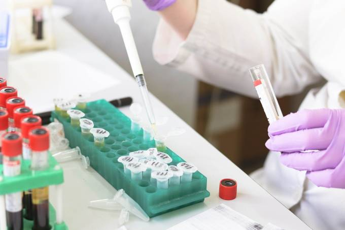

Voto Impresso
Postado em 10 de Agosto de 2021
O plenário da Câmara dos Deputados rejeitou, por 229 votos favoráveis, 218 contrários e uma abstenção, a Proposta de Emenda à Constituição (PEC) 135/19, que torna obrigatório o voto impresso. Para que fosse aprovada, a PEC precisava de, no mínimo, 308 votos em dois turnos de votação. A matéria será arquivada.
Postado por Diego SantosAulas no Distrito Federal
Postado em 09 de Agosto de 2021
Estudantes do 1º ao 5º ano da rede pública do Distrito Federal voltam às aulas presenciais nesta segunda-feira (9). Ao todo, 150.575 alunos estão matriculados nas séries iniciais de 416 escolas de Brasília. Retornam ainda os inscritos no 1º Segmento da Educação de Jovens e Adultos (EJA).
Postado por Diego SantosBrasil hoje não valoriza cientistas
Postado em 11 de Agosto de 2021 O Instituto Serrapilheira é a primeira instituição privada e sem fins lucrativos de fomento à ciência no Brasil. Fundada por João e Branca Moreira Salles, a organização já apoiou mais de 120 projetos
Postado por Diego Santos